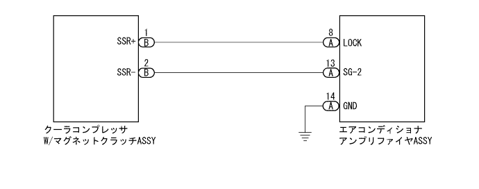
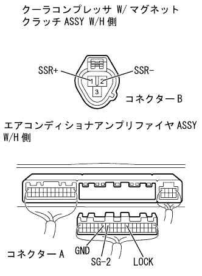
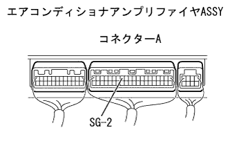
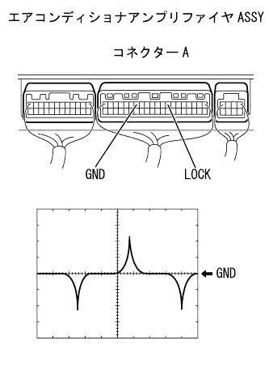
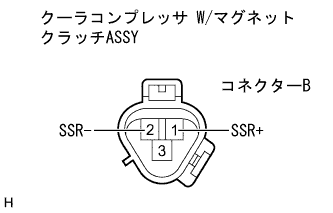

DTC B1422/22 Compressor Lock Detected |
| DTC No. | Diagnosis Description
| Inspection Area |
|---|---|---|
| B1422/22 |
|
|

| Step 1 | Inspect Wire Harness and Connector (Air Conditioner Amplifier Assembly - Cooler Compressor w/ Magnetic Clutch Assembly) |
 |
ReferenceDisconnect connector A of the air conditioner amplifier assembly.
Disconnect connector B of the cooler compressor w/ magnetic clutch assembly.
Using SST (Toyota electrical tester), measure the resistance between the vehicle side wire harness connector terminal and body ground.
| Tester Connection (Terminal Symbol) | Condition | Standard |
|---|---|---|
| B1(SSR+) - A8(LOCK) | Always | Below 1 Ω |
| B2(SSR-) - A13(SG-2) | Always | Below 1 Ω |
| B1 (SSR+) - Body ground | Always | 10k Ω or higher |
| B2 (SSR-) - Body ground | Always | 10k Ω or higher |
| A14 (GND) - Body ground | Always | 10k Ω or higher |
|
| ||||
| OK | |
| Step 2 | Inspect Air Conditioner Amplifier Assembly (SG-2 Terminal) |
 |
Connect connector A of the air conditioner amplifier assembly.
Connect connector B of the cooler compressor w/ magnetic clutch assembly.
Using SST (Toyota electrical tester), measure the resistance between the air conditioner amplifier assembly connector terminal and body ground.
| Tester Connection (Terminal Symbol) | Condition | Standard |
|---|---|---|
| A13 (SG-2) - Body ground | Always | Below 1 Ω |
|
| ||||
| OK | |
| Step 3 | Inspect Air Conditioner Amplifier Assembly (LOCK Terminal) |
 |
Using SST (TaSCAN), measure the waveform between each terminal of the air conditioner amplifier assembly connector.
| Item | Description |
|---|---|
| Measurement Terminal | LOCK - GND |
| Tool Setting | 200mV/DIV, 10ms/DIV |
| Measurement Condition | Engine idling, blower switch LO, A/C switch ON |
| Result | Proceed to |
|---|---|
| Waveform is abnormal | A |
| Waveform is normal | B |
|
| ||||
| A | |
| Step 4 | Inspect Cooler Compressor w/ Magnetic Clutch Assembly |
Disconnect connector B of the cooler compressor w/ magnetic clutch assembly.
 |
Using SST (Toyota electrical tester), measure the resistance between the terminals of the cooler compressor w/ magnetic clutch assembly connector.
| Tester Connection (Terminal Symbol) | Condition | Standard |
|---|---|---|
| B1(SSR+) - B2(SSR-) | Always | 400Ω |
|
| ||||
| OK | ||
| ||